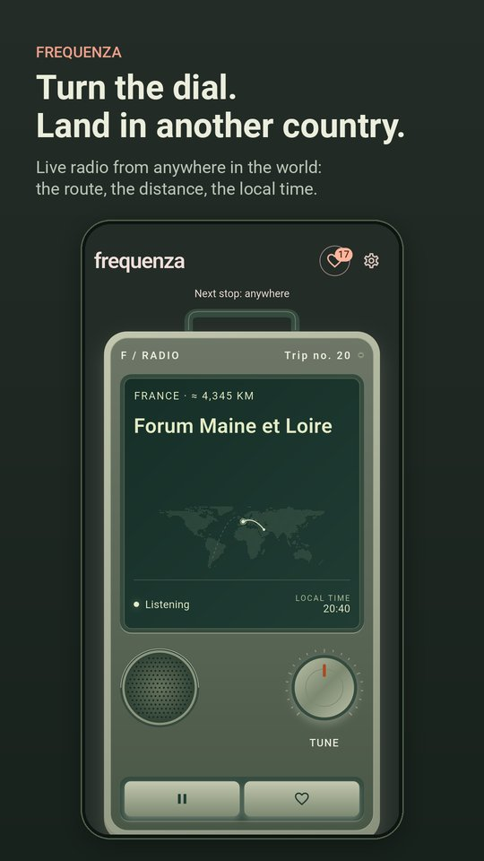
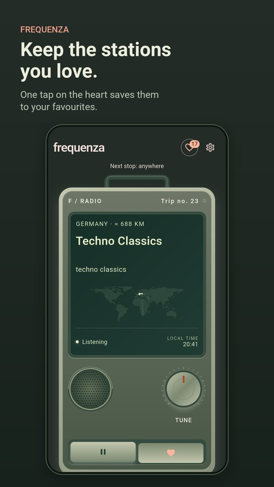

Frequenza
Turn the dial and travel the world, one live radio station at a time. Gira la manopola e viaggia per il mondo, una stazione radio alla volta.


TRY IT BEFORE LAUNCH PROVALA IN ANTEPRIMA
-
Accept the invitation. Accetta l'invito.
Become a tester Diventa tester -
Install it from the Play Store. Installala dal Play Store.
Open Google Play Apri Google Play
Use the Google account you were invited with. Android only. Usa l'account Google con cui sei stato invitato. Solo Android.